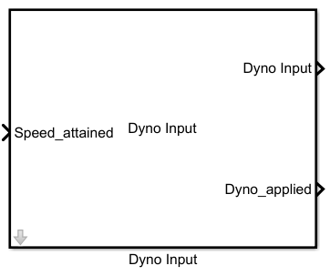

In above figure there are two graphs ,one depicts Dyno Input signal and other is Dyno attained status.
Once the Speed_attained signal is activated, that is logic 1. Dyno Input signal will start generating a ramp (Dyno Step Size) signal till
its value reaches to Dyno Load Value.Once reach Dyno Load Value in the signal,
Dyno_applied will give logic 1 signal. Dyno_applied status may be send to other functions to begin their executions.
This test is supported by two .m files, one for parameter initialization'Parameter_Initialization.m' and other one to run the script 'Automatic_script_Temp.m'.
A test example named 'Harness_Vary_Temp.slx' and can be found in the 'Sim_Arch\Harness' folder.